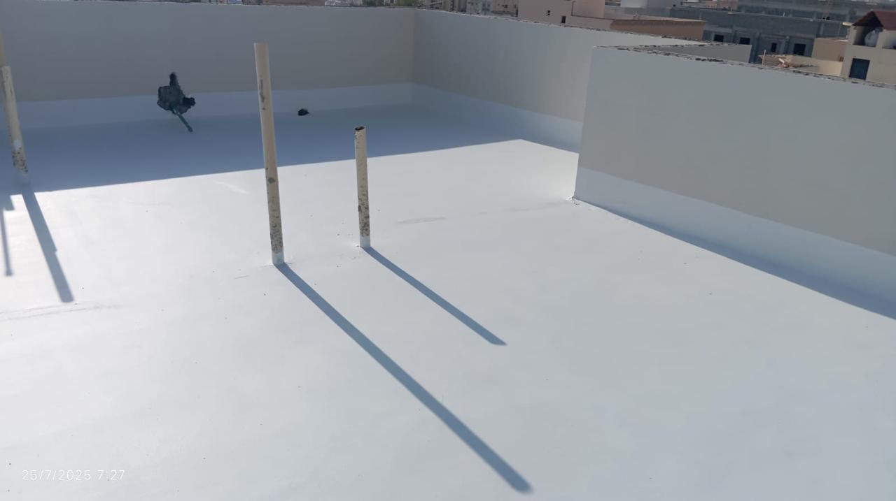

احمِ منزلك من التسربات… وخلّ فاتورتك ترجع لطبيعتها
في كثير من الحالات، السبب الحقيقي لارتفاع فاتورة المياه بيكون تسرب مخفي داخل الجدران أو تحت البلاط. إحنا نبدأ بفحص دقيق بأجهزة حديثة، نحدد مصدر المشكلة بدون تكسير عشوائي، وبعدها ننفذ الحل المناسب: إصلاح التسرب، عزل الأسطح والخزانات، وعزل الحمامات والمطابخ — وكل ده بتنفيذ نظيف وضمان مكتوب.
نلتزم بجودة المواد ودقة التنفيذ، ونقدّم ضمانًا واضحًا على أعمال العزل والخدمات الأساسية حسب طبيعة المشروع.

خدماتنا مصممة لحل المشكلة من جذورها
هدفنا مش “ترقيع” المشكلة — هدفنا نوصل لسببها الحقيقي، نعالجها بحلول عملية، ونحافظ على المكان بعد التنفيذ. سواء كنت بتعاني من ارتفاع مفاجئ في فاتورة المياه، أو رطوبة وروائح، أو تشققات، أو تسرب بالخزانات، هنقدّم لك خطة واضحة خطوة بخطوة.
كشف تسرب المياه
فحص بأجهزة حديثة لتحديد مصدر التسرب بدقة عالية، وتقديم الحل المناسب بدون تكسير عشوائي قدر الإمكان.
حل ارتفاع فاتورة المياه
تحليل أسباب الزيادة، اختبار الشبكة، فحص نقاط التغذية والحمامات والمطابخ والخزانات، ثم معالجة السبب الحقيقي.
عزل الأسطح
عزل مائي/حراري يحد من التسرب والرطوبة ويقلل تأثير الحرارة، مع مراعاة ميول السطح ونقاط التصريف.
عزل الخزانات
عزل داخلي وخارجي حسب الحاجة لضمان سلامة المياه ومنع التسربات وتكوين العفن والرواسب.
عزل الحمامات
طبقات عزل مدروسة قبل التشطيب أو كحل علاجي، لحماية الأرضيات والجدران ومنع الرطوبة المتكررة.
عزل المطابخ
حلول عزل لأماكن التمديدات ونقاط التغذية والتصريف لحماية الخزائن والأرضيات وتقليل فرص التلف.

التسرب الخفي ممكن يسبب أضرار أكبر بكتير من الفاتورة
التسربات المخفية مش بس بترفع الاستهلاك، لكنها مع الوقت تسبب رطوبة داخل الجدران، تقشر دهانات، روائح مزعجة، وضعف في بعض أجزاء البناء. عشان كده بنبدأ بتشخيص صحيح، وبعدين ننفذ علاج مناسب: إصلاح التسرب + عزل يحمي المكان من تكرار المشكلة.
تشخيص واضح → حل عملي → تنفيذ نظيف → ضمان مكتوب.
اختيارك الصح يعني راحة سنين
لما تختار جهة تنفيذ لعزل أو كشف تسربات، الأهم هو الدقة والالتزام وجودة المواد. إحنا نشتغل بمعايير واضحة: اهتمام بالتفاصيل، احترام للمكان، وتواصل صريح مع العميل من البداية للنهاية.
دقة في التشخيص
نحدد مصدر المشكلة قبل أي خطوة تنفيذ، وده يقلل التكلفة ويمنع الحلول العشوائية.
تنفيذ نظيف
نهتم بحماية المكان أثناء العمل، وتسليم مرتب قدر الإمكان، لأن راحة العميل جزء أساسي من الجودة.
خامات معتمدة
نستخدم خامات مناسبة لطبيعة السطح أو الخزان أو منطقة الحمام/المطبخ لتحقيق عمر أطول للعزل.
ضمان 10 سنوات
ضمان واضح ومفهوم حسب نوع الخدمة وطبيعة المشروع — لأننا واثقين من شغلنا.
استجابة سريعة
نرتّب موعد قريب، ونوضح لك الخطوات قبل التنفيذ، وتكون عارف أنت داخل على إيه.
حلول كاملة
من الكشف للإصلاح للعزل، مش هنسيبك في النص. هدفنا نتيجة نهائية مريحة.
خبرة في كشف التسربات والعزل داخل حفر الباطن
إحنا فريق متخصص في كشف تسرب المياه وحلول ارتفاع الفاتورة وأعمال العزل (أسطح/خزانات/حمامات/مطابخ). بنعتمد على خطوات عمل ثابتة: معاينة وفحص، تحديد السبب، خطة علاج، تنفيذ، ثم تسليم وضمان. لأننا نؤمن إن الجودة مش “شكل” — الجودة هي نتيجة تعيش.
اقرأ المزيد عنّا

نماذج من أعمالنا بصور وفيديو
بنعرض لك جزء من الأعمال بدون مبالغة: صور فعلية وفيديو بسيط. هدفنا إنك تشوف مستوى التشطيب والتنفيذ واهتمامنا بالنظافة والترتيب في الشغل.
عرض المشاريعقل لنا مشكلتك… وسنقترح الحل المناسب
اكتب تفاصيل بسيطة: هل المشكلة ارتفاع فاتورة؟ رطوبة؟ تسرب بالخزان؟ وسيتم التواصل معك بسرعة لتحديد موعد معاينة أو إعطاء توجيه أولي واضح.